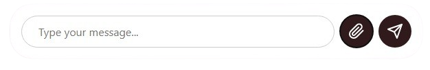

SafeBrowse - An Analyzer
SAFEBROWSE- BEFORE YOU BELIEVE
chatbot to detect and identify harmful content.
SafeBrowse is an Artificial Intelligence integrated platform which provides real time chatbox interface. SafeBrowse provides you with a tool that generate text from a prompt that a user provides. It can process and extracts information from documents of various formats and user provided links and also from the uploaded pdfs and images. In SafeBrowse you can use the power of text prompt of any news article, research paper or just a rumour and check if it contains any false, misinformation or any type of harmful content.
SafeBrowse is an AI-powered platform designed to detect and identify harmful content across text, images, and files. Using cutting-edge machine learning algorithms, it analyzes content for hate speech, misinformation, cyberbullying, and explicit material. SafeBrowse provides real-time corrections, content moderation suggestions, and actionable insights to ensure a safer digital environment.
About Us
We are a team of software developers committed to making the internet a safer place. Our mission is to create a safer internet experience for everyone. We believe that everyone should have access to tools that help them stay safe online.
- Images
- Documents(PDFs, Word, etc)
- Other media files for sharing information
SafeBrowse is a URL analysis tool to evaluate, analyze and provide detailed
reports
about any URL. We provide a comprehensive view of the webpage
by scanning it with
various online resources and checking it against malware and
phishing databases.
Our tool helps users make informed decisions about
the safety of websites they visit.